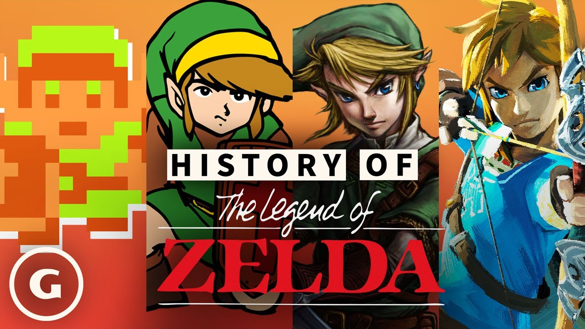
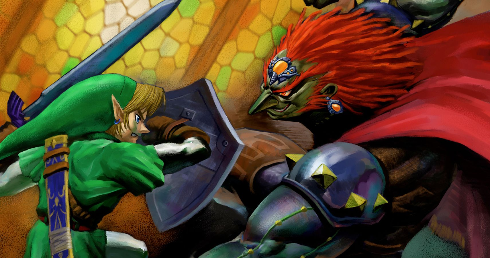
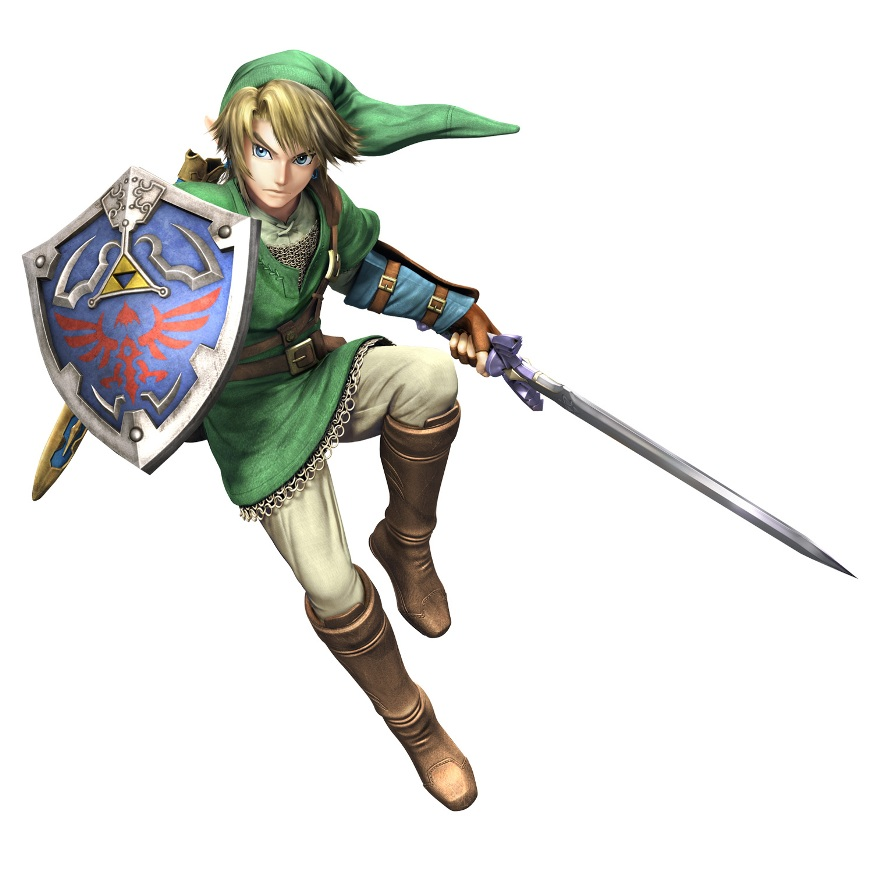
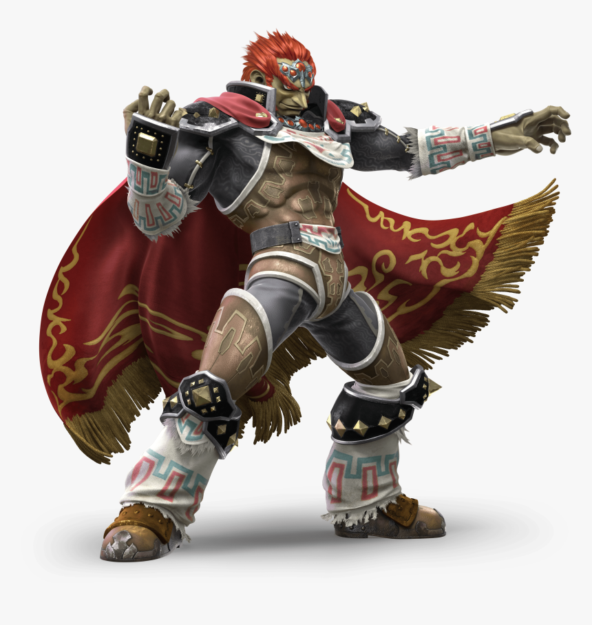

History

The Legend of Zelda is one of the most iconic and influential video game
franchises of all time, developed by Nintendo. Created by Shigeru Miyamoto
and Takashi Tezuka, the series debuted in 1986 and has since evolved into
a cornerstone of the action-adventure genre, known for its open-world
exploration, puzzle-solving, and epic storytelling. The original game
introduced players to the kingdom of Hyrule and its hero, Link,
who embarks on a quest to rescue Princess Zelda and defeat the evil Ganon.
It was revolutionary for its time, allowing players to freely explore
a non-linear world filled with secrets and challenges.
Plot

The Legend of Zelda follows the journey of Link, a young hero chosen to
protect the kingdom of Hyrule from various evil forces, primarily the
dark sorcerer Ganon. Throughout the series, Link embarks on quests to
rescue Princess Zelda, who often holds key knowledge or power needed to
combat the impending threat. As he traverses vast landscapes, solves
intricate puzzles, and battles formidable foes, Link discovers ancient
relics like the Master Sword and the Triforce, which grant him the
abilities necessary to restore peace to Hyrule. Each game unfolds a new
chapter in their struggle against darkness, weaving together themes of
courage, wisdom, and the eternal conflict between good and evil.
Characters
In The Legend of Zelda series, the main protagonist is a brave hero
who embodies courage and determination, often tasked with saving the
kingdom of Hyrule and its inhabitants from impending doom. This hero,
typically equipped with iconic weapons and armor, embarks on perilous
quests, solving puzzles and defeating formidable foes along the way.
n stark contrast stands the primary antagonist, a dark sorcerer or
villain driven by a relentless desire for power and control. This
antagonist frequently seeks the mystical Triforce or other ancient
relics to achieve their goals, creating a timeless conflict between
good and evil that fuels the series' compelling narratives.
Zelda

Zelda is the heir to the throne of the Kingdom of Hyrule.
As a princess, she is often depicted as a wise, responsible leader
with a deep understanding of the fate of her kingdom and her own
role in maintaining the balance of the world.
Link

Link is the courageous hero and protagonist of The Legend of Zelda
series. As the bearer of the Triforce of Courage, Link is often
depicted as a humble, brave, and selfless warrior, dedicated to
protecting the kingdom of Hyrule and its people. Armed with the
legendary Master Sword and his unwavering resolve, Link embarks
on perilous quests to defeat evil forces threatening the land.
Although he is usually a silent protagonist, his actions reflect
his deep sense of responsibility and his connection to the
kingdoms destiny. Link is also known for his resourcefulness,
wielding various tools and weapons, solving puzzles, and
confronting powerful foes to restore balance to the world.
Ganon

Ganon (or Ganondorf in his human form) is the primary antagonist of
The Legend of Zelda series, and the bearer of the Triforce of Power.
As the King of Evil, Ganon is a ruthless and powerful sorcerer bent
on conquering Hyrule and gaining complete control over the Triforce.
His dark ambitions often plunge the world into chaos, and he
relentlessly pursues power at any cost. Ganon character is
defined by his insatiable hunger for domination, his formidable
magical abilities, and his transformations into monstrous forms.
He represents the ultimate embodiment of evil and destruction,
standing as Link greatest nemesis in the eternal battle between
good and evil.